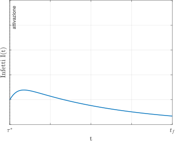
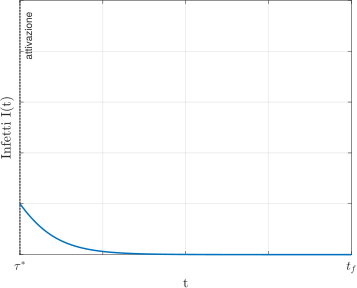
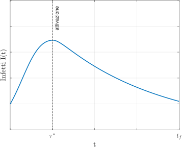
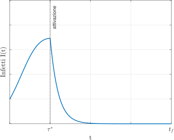
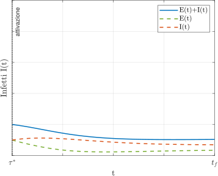
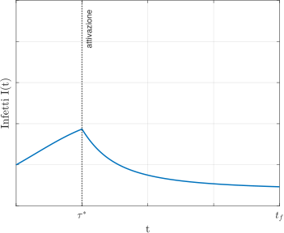
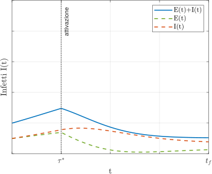
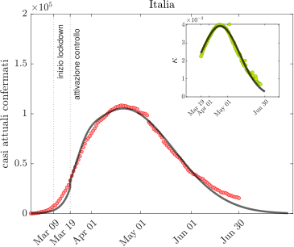

Università degli Studi di Verona
DEPARTMENT OF COMPUTER SCIENCE
Master Degree in Mathematics
Data-driven modelling and calibration of multi-agent systems
| Candidate: Andrea Mortaro |
Supervisor: Prof. Dott. Giacomo Albi |
Introduction
Our aim is to study interaction dynamics and model them using data-driven techniques in a traffic context. The emphasis of this thesis is on:
- Discrete-to-continuum transition in traffic modelling.
- Neural networks for modelling interactions with data.
Traffic models
Traffic models
Our focus lies in uncovering the underlying connection in traffic modelling between:
- Macroscopic models, as the Lighthill–Whitham–Richards (LWR) model;
- Microscopic models, as the Follow-The-Leader-type (FTL) models.
Traffic models
Macroscopic models
Traffic models
Macroscopic models
\[ \rho_{t} + \left( f(\rho) \right)_{x} = 0, \quad t>0,\, x \in \mathbb{R}, \]Traffic models
Microscopic models
Traffic models
Microscopic models
\[ \left\{ \begin{aligned} & \dot{x}_{n} = v_{max} \\ & \dot{x}_{i} = v \left( \dfrac{ \ell }{ x_{i+1} - x_{i} } \right), \quad &&i = 1,... , n-1 \end{aligned} \right. \]Traffic models
IMMAGINE QUALITATIVA?Traffic models
Theoretical analysis
Traffic models
Theoretical analysis
\begin{equation} \label{cauchy} \left\{ \begin{aligned} & \rho_{t} + \left(f(\rho)\right)_{x} = 0, \quad &&(t,x) \in (0, +\infty) \times \mathbb{R}, \\ & \rho(0,x) = \bar{\rho}(x) \quad &&x \in \mathbb{R}, \end{aligned} \right. \end{equation}where $f(\rho)\ \dot{=}\ \rho\ v(\rho)$.
Traffic models
Theoretical analysis
The main properties of the solutions of the Cauchy problem are:
- if $\bar{\rho}$ has compact support $\implies$ the support of any solution has a finite speed of propagation;
- The Maximum Principle holds true;
- if $\bar{\rho}(x) \geq 0 \implies \rho(x) \geq 0 \quad \forall t >0$;
- The total mass $\int_{\mathbb{R}} \rho(t, x)\, dx$ is time independent: \[ \int_{\mathbb{R}} \rho(t, x)\, dx = L\ \dot{=} \int_{\mathbb{R}} \bar{\rho}(x)\, dx \quad \forall t \geq 0. \]
Traffic models
Theoretical analysis
Assume that $\bar{\rho}$ and $v:\mathbb{R}_{+}\rightarrow\mathbb{R}$ satisfy: \begin{equation} \label{hp:rho} \bar{\rho} \in \mathcal{L}^\infty(\mathbb{R}) \cap \mathcal{L}^1(\mathbb{R}),\quad \bar{\rho} \geq 0, \end{equation} \begin{equation} \label{hp:v} v \in \mathcal{C}^1(\mathbb{R}_{+}),\quad v'(\rho) < 0\ for\ \rho > 0. \end{equation}
Traffic models
Theoretical analysis
Assume that $\bar{\rho}$ and $v:\mathbb{R}_{+}\rightarrow\mathbb{R}$ satisfy: \begin{equation*} \bar{\rho} \in \mathcal{L}^\infty(\mathbb{R}) \cap \mathcal{L}^1(\mathbb{R}),\quad \bar{\rho} \geq 0, \end{equation*} \begin{equation*} v \in \mathcal{C}^1(\mathbb{R}_{+}),\quad v'(\rho) < 0\;\; \forall\rho > 0. \end{equation*} In some cases we require the additional assumptions: \begin{equation} \label{addhp:rho} \bar{\rho} \in \mathcal{BV}(\mathbb{R}), \end{equation} \begin{equation} \label{addhp:v} \mathbb{R}^{+} \ni \rho \mapsto \rho\ v'(\rho) \in \mathbb{R}^{-} \end{equation}
Traffic models
Theoretical analysis
For sake of simplicity, we assume: \begin{equation*} L\ \dot{=}\|\bar{\rho}\|_{\mathcal{L}^1(\mathbb{R})} = 1 \end{equation*} \begin{equation*} v_{\text{max}}\ \dot{=}\ v(0),\quad v_{\text{max}} > 0 \end{equation*}
Traffic models
Theoretical analysis
Definition 1 (Entropy solution). Let the initial datum $\bar{\rho}$ satisfy \eqref{hp:rho}. A weak solution $\rho \in \mathcal{L}^\infty(\mathbb{R})$ to the Cauchy problem \eqref{cauchy} is called entropy solution to the Cauchy problem if: \begin{equation*} \iint\limits_{\mathbb{R}^+ \times \mathbb{R}} \bigg[ |\rho(t,x) - k|\varphi_{t}(t,x)\ +\ \text{sign}(\rho(t,x) - k) \left[ f(\rho(t,x)) - f(k)\right]\varphi_{x}(t,x)\bigg] dx\ dt\ \geq 0 \end{equation*} for all $\varphi \in \mathcal{C}_{c}^\infty((0, +\infty) \times \mathbb{R})$ and for all $k \geq 0$.
Traffic models
Theoretical analysis
Theorem 1 (Existance and uniqueness). Assume that \eqref{hp:rho} and \eqref{hp:v} are satisfied. Then there exists a unique entropy solution according to Definition 1.
Traffic models
Theoretical analysis
Theorem 1 (Existance and uniqueness).
Assume that \eqref{hp:rho} and \eqref{hp:v} are satisfied. Then there exists a unique entropy solution according to Definition 1.
Theorem 2 (Convergence).
Assume that \eqref{hp:rho} and \eqref{hp:v} are satisfied. Moreover, assume that at least one of the two conditions \eqref{addhp:rho} and \eqref{addhp:v} are satisfied.
Then $\rho^{n}$ converges (up to a subsequence) almost everywhere and in $\mathcal{L}^{1}_{loc}$ on $\mathbb{R}_{+} \times \mathbb{R}$ to the unique entropy solution $\rho$ to the Cauchy problem \eqref{cauchy}, according to Definition 1.
Traffic models
Theoretical analysis
Follow-The-Leader model: approximating scheme.
Traffic models
Follow-The-Leader model: approximating scheme.
For $n \in \mathbb{N}$ sufficiently large, we set $\ell_{n} \dot{=}\ \frac{1}{n}$ and we define: \begin{equation*} \bar{x}^{n}_{1}\ \dot{=}\ \text{sup} \bigg\{ x \in \mathbb{R}: \int_{-\infty}^{x} \bar{\rho}(x)\ dx\ < \ell_{n} \bigg\}, \end{equation*} and for $i\ \in\ \{2,...,n-1\}$ recursively: \begin{equation*} \bar{x}^{n}_{i}\ \dot{=}\ \text{sup} \bigg\{ x \in \mathbb{R}: \int_{\bar{x}^{n}_{i-1}}^{x} \bar{\rho}(x)\ dx\ < \ell_{n} \bigg\}. \end{equation*}
Traffic models
Follow-The-Leader model: approximating scheme.
From this definition we get a monotonicity property: \begin{equation*} \bar{x}^{n}_{1}<\bar{x}^{n}_{2}<...<\bar{x}^{n}_{n-1}, \end{equation*} and we have equal mass $\ell_{n}$ on each interval: \begin{equation*} \int_{-\infty}^{\bar{x}^{n}_{1}} \bar{\rho}(x) dx\ =\ \int_{\bar{x}^{n}_{i-1}}^{\bar{x}^{n}_{i}} \bar{\rho}(x) dx\ =\ \int_{\bar{x}^{n}_{n-1}}^{+\infty} \bar{\rho}(x) dx\ =\ \ell_n,\qquad i \in \{2,...,n-1\}. \end{equation*}
Traffic models
Follow-The-Leader model: approximating scheme.
Let the particles $\{\bar{x}^{n}_{i}\}^{n-1}_{i=1}$ evolve according to the Follow-The-Leader system of ODEs: \begin{equation} \label{ftl} \left\{ \begin{aligned} & \dot{x}^{n}_{i}(t) = v(R^{n}_{i}(t)),\quad\ &i \in \{1,...,n-2\},\\ & \dot{x}^{n}_{n-1}(t) = v_{max}, \\ & x^{n}_{i}(0) = \bar{x}^{n}_{i},\quad\ &i \in \{1,...,n-1\}, \\ \end{aligned} \right. \end{equation} where we define: \begin{equation} \label{Ri} R^{n}_{i}(t)\ \dot{=}\ \frac{\ell_{n}}{x^{n}_{i+1}(t)-x^{n}_{i}(t)}, \qquad R\ \dot{=}\ \|\bar{\rho}\|_{\mathcal{L}^{\infty}(\mathbb{R})}, \end{equation}
Traffic models
Follow-The-Leader model: approximating scheme.
Lemma 1 (Discrete Maximum Principle). Assume that \eqref{hp:rho} and \eqref{hp:v} are satisfied. Then $\forall t \in \mathbb{R}_{+}$ the solution to \eqref{ftl} satisfies \begin{equation*} x^{n}_{i+1}(t)-x^{n}_{i}(t) \geq \frac{\ell_{n}}{R}, \qquad i \in \{1,...,n-2\}. \end{equation*}
Traffic models
Follow-The-Leader model: approximating scheme.
To get a time-depending density with unit mass we set two artificial particles $x^{n}_{0}(t)$ and $x^{n}_{n}(t)$ for all $t \geq 0$ as: \begin{equation} \label{artp} x^{n}_{0}(t)\ \dot{=}\ 2x^{n}_{1}(t) - x^{n}_{2}(t),\qquad x^{n}_{n}(t)\ \dot{=}\ 2x^{n}_{n-1}(t) - x^{n}_{n-2}(t), \end{equation}
Traffic models
Follow-The-Leader model: approximating scheme.
To get a time-depending density with unit mass we set two artificial particles $x^{n}_{0}(t)$ and $x^{n}_{n}(t)$ for all $t \geq 0$ as: \begin{equation*} x^{n}_{0}(t)\ \dot{=}\ 2x^{n}_{1}(t) - x^{n}_{2}(t),\qquad x^{n}_{n}(t)\ \dot{=}\ 2x^{n}_{n-1}(t) - x^{n}_{n-2}(t), \end{equation*} and let \begin{equation*} R^{n}_{0}(t)\ \dot{=}\ R^{n}_{1}(t), \qquad R^{n}_{n}(t)\ \dot{=}\ R^{n}_{n-1}(t). \end{equation*}
Traffic models
Follow-The-Leader model: approximating scheme.
\begin{equation} \label{density:def} \begin{aligned} \rho^{n}(t,x)\ \dot{=}&\ \sum_{i=0}^{n-1} R^{n}_{i}(t)\ \unicode{x1D7D9}_{[x^{n}_{i}(t),x^{n}_{i+1}(t)]}(x)\\ =&\ \sum_{i=0}^{n-1} \frac{\ell_{n}}{x^{n}_{i+1}(t)-x^{n}_{i}(t)}\ \unicode{x1D7D9}_{[x^{n}_{i}(t),x^{n}_{i+1}(t)]}(x), \end{aligned} \end{equation}
Traffic models
Follow-The-Leader model: approximating scheme.
$\rho^{n}(t,x)$ has the properties: \begin{equation*} \int_{\mathbb{R}}\rho^{n}(t,x) dx\ = n,\\ \rho^{n}(t,\cdot) \text{ is compactly supported $\forall\,n,t$},\\ \|\rho^{n}(t,\cdot)\|_{\mathcal{L}^{\infty}(\mathbb{R})} \leq R\ \dot{=}\ \|\bar{\rho}\|_{\mathcal{L}^{\infty}(\mathbb{R})} \quad \forall t \geq 0. \end{equation*}
Traffic models
Follow-The-Leader model: approximating scheme.
If $\text{supp}\left[ \bar{\rho} \right]$ is bounded either from above or from below, then we can improve the construction as follows:
-
$\text{supp}\left[ \bar{\rho} \right]$ bounded from above:
Set $x^{n}_{n}$ on $\max\{ \text{supp}\left[ \bar{\rho} \right] \}$ initially and let evolve with maximum speed $v_{max}$, and the preceding particle $x^{n}_{n-1}$ let evolve according to $\dot{x}^{n}_{i}(t) = v\left( \frac{\ell_{n}}{x^{n}_{i+1}(t)-x^{n}_{i}(t)} \right)$; -
$\text{supp}\left[ \bar{\rho} \right]$ bounded from below:
Set $x^{n}_{0}$ on $\min\{ \text{supp}\left[ \bar{\rho} \right] \}$ initially and let it evolve via $\dot{x}^{n}_{0}(t) = v \left( \frac{\ell_{n}}{x^{n}_{1}(t)-x^{n}_{0}(t)} \right)$.
Traffic models
Sketch of the proof
Traffic models
Sketch of the proof
Theorem 2 (Convergence). Assume that \eqref{hp:rho} and \eqref{hp:v} are satisfied. Moreover, assume that at least one of the two conditions \eqref{addhp:rho} and \eqref{addhp:v} are satisfied. Then $\rho^{n}$ converges (up to a subsequence) almost everywhere and in $\mathcal{L}^{1}_{loc}$ on $\mathbb{R}_{+} \times \mathbb{R}$ to the unique entropy solution $\rho$ to the Cauchy problem \eqref{cauchy}, according to Definition 1.
Traffic models
Sketch of the proof: compactness
Traffic models
Sketch of the proof: compactness
To gain compactness of the approximating scheme we need a uniform control for the $\mathcal{BV}$-norm. In our case, the compactness can be obtained in two different ways.
Traffic models
Sketch of the proof: compactness
First way:
A uniform $\mathcal{BV}$ contraction property for $\rho^{n}$, which requires $\mathcal{BV}$ initial data \eqref{addhp:rho}.
Proposition 1.
Assume that \eqref{hp:rho}, \eqref{addhp:rho} and \eqref{hp:v} are satisfied. Then, for all $n \in \mathbb{N}$ one has
\begin{equation}
TV\left[\rho^{n}(t,\cdot)\right] \leq TV\left[\rho^{n}(0,\cdot)\right] \leq TV\left[\bar{\rho}\right].
\end{equation}
Traffic models
Sketch of the proof: compactness
Second way: Use the discrete Oleinik-type inequality, which doesn't require the extra-assumption \eqref{addhp:rho} on $\bar{\rho}$, but only the additional assumpton \eqref{addhp:v} on $v$.
Proposition 2.
Assume that \eqref{hp:rho}, \eqref{hp:v} and \eqref{addhp:v} are satisfied. Then, for all $n \geq 0$ one has
\begin{equation} \label{oleinik:ineq}
\dfrac{\dot{x}^{n}_{i+1}(t)-\dot{x}^{n}_{i}(t) }{x^{n}_{i+1}(t)-x^{n}_{i}(t) } \leq \frac{1}{t}, \qquad i \in \{0,...,n-1\}.
\end{equation}
Proposition 3.
Assume that \eqref{hp:rho}, \eqref{hp:v} and \eqref{addhp:v} are satisfied. Let $\delta > 0,\, a < b$. Then:
\begin{equation*}
\sup_{t \geq \delta} \text{TV} \big(\rho^{n}(t,\cdot); \left[ a,b \right]\big)
\end{equation*}
is uniformly bounded with respect to $n$.
Traffic models
Sketch of the proof: compactness
To achieve strong $\mathcal{L}^{1}$ compactness w.r.t. both $x$ and $t$ we consider 1-Wasserstein distance.
Definition 2 (1-Wasserstein distance).
Let $\mu$ be a probability measure on $\mathbb{R}$. Define the pseudo-inverse variable $X_{\mu} \in \mathcal{L}^{1}([0,1])$ as
\begin{equation*}
X_{\mu}(z)\ \dot{=}\ \inf\left\{ x \in \mathbb{R} : \mu \left( (-\infty,x] \right) > z \right\}.
\end{equation*}
Given two probability measures $\mu$ and $\nu$ on $\mathbb{R}$, we set:
\begin{equation*}
W_{1}(\mu,\nu)\ \dot{=}\ \|X_{\mu} - X_{\nu}\|_{\mathcal{L}^1_{[0,1]}}.
\end{equation*}
Traffic models
Sketch of the proof: compactness
Proposition 4. Assume \eqref{hp:rho} and \eqref{hp:v} are satisfied. There exists a constant $C$ independent of $n$, such that \begin{equation*} W_{1} (\rho^{n}(t,\cdot), \rho^{n}(s,\cdot) ) \leq C |t-s| \quad \forall \text{t,s} > 0. \end{equation*}
Traffic models
Sketch of the proof: compactness
Theorem 3 (Generalised Aubin-Lions lemma). Let $\,T > 0, \,a,b \in \mathbb{R}, a < b$ and $v$ satisfy \eqref{hp:v}. Let $\rho^{n}$ be a sequence in $\mathcal{L}^{\infty} \left( (0,T);\ \mathcal{L}^{1}(\mathbb{R}) \right)$ with: \begin{equation*} \rho^{n} (t, \cdot) \geq 0, \quad \| \rho^{n} (t, \cdot) \|_{\mathcal{L}^{1}(\mathbb{R})} = 1 \; \forall n \in \mathbb{N}, \; \forall t \in \left[ 0,T \right]. \end{equation*} Assume further that:
- $\sup_{n \in \mathbb{N}} \left[ \int_{0}^{T} \big[ \| v(\rho^{n}(t, \cdot)) \|_{\mathcal{L}^{1} ( \left[ a,b \right] ) } + TV \left( v(\rho^{n}(t,\cdot));\ \left[ a,b \right] \right) \big] dt \right] < +\infty,$
- $\exists\, C>0$ independent of $n$ such that \begin{equation*} W_{1} (\rho^{n}(t,\cdot), \rho^{n}(s,\cdot) ) \leq C |t-s| \quad \forall \text{t,s} \in (0,T). \end{equation*}
Then $\rho^{n}$ is strongly relatively compact in $\mathcal{L}^{1} \left( \left[ 0,T \right] \times \left[ a,b \right]\right)$.
Traffic models
Sketch of the proof: convergence
Traffic models
Sketch of the proof: convergence
Once gained strong $\mathcal{L}^{1}$ compactness and by passing from $\left[ \delta, T \right]$ to $( 0,T )$, one can show that $\rho^{n}$ admits a converging subsequence a.e. in $\mathcal{L}^{1} \left( \left( 0,T \right) \times \mathbb{R} \right)$. Denote $\rho$ such limit.
Traffic models
Sketch of the proof: convergence
Step 1: $\rho$ is a weak solution to \eqref{cauchy}. Let $\varphi \in \text{C}^{\infty}_{\text{c}} \left( \mathbb{R}_{+} \times \mathbb{R} \right)$ and compute: \begin{align*} \def\avint{\mathop{\,\rlap{-}\!\!\int}\nolimits} & \iint_{\mathbb{R}_{+} \times \mathbb{R}} \Big[ \rho^{n} (t,x)\, \varphi_{t} \left( t, x \right) + \rho^{n}(t,x)\, v( \rho^{n}(t,x) )\, \varphi_{x} \left( t,x \right) \Big] dx\, dt\\ & \leq \ 2 \ell_{n} \| \varphi (0,\cdot) \|_{\mathcal{L}^{\infty}(\mathbb{R})} + \sum_{i=0}^{n-1} \left| \int_{\bar{x}_{i}^{n}}^{\bar{x}_{i+1}^{n}} \bar{\rho} (x) \left[ \varphi (0,x) - \avint_{\bar{x}_{i}^{n}}^{\bar{x}_{i+1}^{n}} \varphi (0,y)\, dy \right] dx \right| \end{align*}
Traffic models
Sketch of the proof: convergence
Step 1. Case 1: $\bar{\rho}$ is compactly supported. Assume $\text{supp}[\varphi] \subset [\delta, T] \times \mathbb{R}$ for $0 < \delta < T$, \begin{align*} & \Bigg| \iint_{\mathbb{R}_{+} \times \mathbb{R}} \Big[ \rho^{n} (t,x)\, \varphi_{t} \left( t, x \right) + \rho^{n}(t,x)\, v( \rho^{n}(t,x) )\, \varphi_{x} \left( t,x \right) \Big] dx \, dt \Bigg| \nonumber \\ & \leq\ \dfrac{T\, \text{Lip}[ \varphi ] \ell_{n}}{2} \Bigg[ v_{max} - v(R) + \sup_{t \in [ \delta,T ]} TV \left( v (\rho^{n} (t, \cdot)) ; J(T) \right) \Bigg] \end{align*} where $J(T) \dot{=} \left[ \min \left\{ \text{supp} \left[ \bar{\rho} \right] \right\} + v(R)\, T,\; \max \left\{ \text{supp} \left[ \bar{\rho} \right] \right\} + v_{max}\, T \right] $.
Traffic models
Sketch of the proof: convergence
Step 1.
Case 2: $\bar{\rho}$ is not compactly supported.
Assume $\text{supp} \left[ \bar{\rho} \right]$ unbounded both from above and from below.
Assume $\text{supp} \left[ \varphi \right] \subset \left[ \delta, T\right] \times \left[ a,b \right]$ for some $0 < \delta < T$ and $ a < b$. Let $n \in \mathbb{N}$ be sufficiently large so that $\bar{x}_{1}^{n} < a - v_{max}\, T$ and $\bar{x}_{n-1}^{n} > b - v(R)\, T$.
Therefore $x_{1}^{n}(t) < a$ and ${x}_{n-1}^{n}(t) > b \;\; \forall t \in \left[ 0,T \right]$.
\begin{align*} & \Bigg| \iint_{\mathbb{R}_{+} \times \mathbb{R}} \Big[ \rho^{n} (t,x)\, \varphi_{t} \left( t, x \right) + \rho^{n}(t,x)\, v( \rho^{n}(t,x) )\, \varphi_{x} \left( t,x \right) \Big] dx \; dt \Bigg| \\ & =\ \Bigg| \sum_{i=0}^{n-1} \int_{\mathbb{R}_{+}} R_{i}^{n} (t) \Bigg[ \int_{x_{i}^{n}(t)}^{x_{i+1}^{n}(t)} \varphi_{t} \left( t,x \right) dx + v(R_{i}^{n} (t)) \Big[ \varphi(t, x_{i+1}^{n}(t)) - \varphi(t, x_{i}^{n}(t)) \Big] \Bigg] dt \Bigg| \end{align*}
Traffic models
Sketch of the proof: convergence
Step 2: $\rho$ satisfies the entropy inequality in Definition 1. Let $\varphi \in \text{C}^{\infty}_{\text{c}} \left( \left( 0,+\infty \right) \times \mathbb{R} \right)$ with $\varphi \geq 0$ and $k \geq 0$.
\begin{align*} & \iint\limits_{\mathbb{R}^{+} \times \mathbb{R}} \bigg[ |\rho(t,x) - k| \varphi_{t}(t,x)\ +\ \text{sign}(\rho(t,x) - k) \left[ f(\rho(t,x)) - f(k)\right]\varphi_{x}(t,x)\bigg] dx \, dt \\ & =\ k \int_{\mathbb{R}^{+}} \Big[ \big[ v(k) - \dot{x}_{0}^{n}(t) \big] \varphi(t, x_{0}^{n}(t)) + \big[ v(k) - \dot{x}_{n}^{n}(t) \big] \varphi(t, x_{n}^{n}(t)) \Big] dt\\ & \hspace{20pt} + \sum_{i=0}^{n-1} \int_{\mathbb{R}^{+}} \text{sign} \left( R_{i}^{n}(t) - k \right) \Bigg[ - \dot{R}_{i}^{n} (t) \left( \int_{x_{i}^{n}(t)}^{x_{i+1}^{n}(t)} \varphi (t,x) dx \right)\\ & \hspace{20pt} - \Big[ R_{i}^{n} (t) \left[ \dot{x}_{i+1}^{n}(t) - v(R_{i}^{n} (t)) \right] - k \left[ \dot{x}_{i+1}^{n}(t) - v(k) \right] \Big] \varphi (t, x_{i+1}^{n}(t))\\ & \hspace{20pt} + \Big[ R_{i}^{n} (t) \left[ \dot{x}_{i}^{n}(t) - v(R_{i}^{n} (t)) \right] - k \left[ \dot{x}_{i}^{n}(t) - v(k) \right] \Big] \varphi (t, x_{i}^{n}(t)) \Bigg] dt.\\ \end{align*}
Traffic models
Sketch of the proof: convergence
Step 2. Case 1: $\bar{\rho}$ is compactly supported. Assume $\text{supp}[\varphi] \subset [\delta, T] \times \mathbb{R}$ for $0 < \delta < T$,
\begin{align*} & \iint\limits_{\mathbb{R}^{+} \times \mathbb{R}} \bigg[ |\rho(t,x) - k|\varphi_{t}(t,x)\ + \text{sign} ( \rho(t,x) - k) \left[ f(\rho(t,x)) - f(k)\right]\varphi_{x}(t,x)\bigg] dx \, dt \\ =&\ k \int_{\mathbb{R}^{+}} \Big[ \big[ v(k) - v(R_{0}^{n}(t)) \big] \varphi(t, x_{0}^{n}(t)) - \big[ v(k) - v_{max} \big] \varphi(t, x_{n}^{n}(t)) \Big] dt\\ &+ \sum_{i=0}^{n-2} \int_{\mathbb{R}^{+}} \text{sign} \left( R_{i}^{n}(t) - k \right) \Bigg[ \dfrac{R^{n}_{i}(t)^{2}}{\ell_{n}} \Bigg( \int_{x_{i}^{n}(t)}^{x_{i+1}^{n}(t)} \varphi (t,x) - \varphi (t, x_{i+1}^{n}(t)) dx \Bigg) \Big[ v(R^{n}_{i+1}(t)) - v(R^{n}_{i}(t))\Big] \\ & \hspace{5pt} + k \Big[ \left[ v(R^{n}_{i+1}(t)) - v(k) \right] \varphi (t, x_{i+1}^{n}(t)) - \left[ v(R^{n}_{i}(t)) - v(k) \right] \varphi (t, x_{i}^{n}(t)) \Big] \Bigg] dt\\ &+ \int_{\mathbb{R}^{+}} \text{sign} \left( R_{n-1}^{n}(t) - k \right) \Bigg[ \dfrac{R^{n}_{n-1}(t)^{2}}{\ell_{n}} \Bigg( \int_{x_{n-1}^{n}(t)}^{x_{n}^{n}(t)} \varphi (t,x) - \varphi (t, x_{n}^{n}(t)) dx \Bigg) \Big[ v_{max} - v(R^{n}_{n-1}(t)) \Big]\\ & \hspace{5pt} + k \Big[ \left[ v_{max} - v(k) \right] \varphi (t, x_{n}^{n}(t)) - \left[ v(R^{n}_{n-1}(t)) - v(k) \right] \varphi (t, x_{n-1}^{n}(t)) \Big] \Bigg] dt \end{align*}
Traffic models
Sketch of the proof: convergence
Step 2. Case 2: $\bar{\rho}$ is not compactly supported. Assume $\text{supp} \left[ \bar{\rho} \right]$ unbounded both from above and from below.
\begin{align*} & \iint\limits_{\mathbb{R}^{+} \times \mathbb{R}} \bigg[ \left| \rho(t,x) - k \right| \varphi_{t}(t,x)\ + \text{sign} (\rho(t,x) - k) \left[ f(\rho(t,x)) - f(k)\right] \varphi_{x}(t,x)\bigg] dx \, dt \\ & = \sum_{i=1}^{n-2} \int_{\mathbb{R}^{+}} \Bigg[ | R_{i-1}^{n}(t) - k | \Bigg( \int_{x_{i}^{n}(t)}^{x_{i+1}^{n}(t)} \varphi_{t} (t,x) \Bigg) + \text{sign} \left( R_{i}^{n}(t) - k \right) \Big[ f(R_{i}^{n}(t)) - f(k) \Big] \Big[ \varphi (t, x_{i+1}^{n}(t)) - \varphi (t, x_{i}^{n}(t)) \Big] \Bigg] dt \end{align*}
for all $\varphi \in \text{C}^{\infty}_{\text{c}} \left( \left( 0, +\infty \right) \times \mathbb{R} \right)$
Traffic models
Numerics
Strategie di controllo
Strategie di controllo
I principali problemi di controllo riguardano:
- minimizzare il numero totale di infetti;
- minimizzare la durata dell'epidemia.
Controllo ottimo tempo ottimale
Riscriviamo il sistema SIR nella forma compatta $\dot{\boldsymbol{x}} = f(\boldsymbol{x})$, con $\boldsymbol{x}(t) = (S(t),I(t))^\top$.
Controllo ottimo tempo ottimale
Riscriviamo il sistema SIR nella forma compatta $\dot{\boldsymbol{x}} = f(\boldsymbol{x})$, con $\boldsymbol{x}(t) = (S(t),I(t))^\top$.
Applicando il generico termine di controllo $u(t)$, otteniamo il sistema controllato \[ \dot{\boldsymbol{x}}(t) = f(\boldsymbol{x}(t)) + u(t)g(\boldsymbol{x}(t)), \]
dove $g$ dipende dalla strategia di controllo scelta \[ \small g_l(\boldsymbol{x}) = \begin{pmatrix} -\alpha_1 S\\ -\alpha_2 I \end{pmatrix}. \]
Controllo ottimo tempo ottimale
Definizione (Tempo di eradicazione). Il tempo di eradicazione $T$ del problema SIR con controllo è il primo tempo per il quale il numero di infetti raggiunge una certa soglia $\varepsilon < 1$, dove $\varepsilon$ è una costante positiva fissata.
Controllo ottimo tempo ottimale
\[ \Tiny \begin{aligned} & \min_{u(t)} & & J(u) = \int_{0}^{T}1dt \quad \text{(Tempo di eradicazione)}\\ & \text{ t.c.} & & \dot{\boldsymbol{x}}(t) = f(\boldsymbol{x}(t)) + u(t)g(\boldsymbol{x}(t)),\quad t \geq 0;\\ &&& \boldsymbol{x}(0) = \boldsymbol{x}_0,\quad \boldsymbol{x}(T) \in \mathcal{C} = \left\{(S,I) : I = \varepsilon \right\}\\ &&& u : [0,+\infty) \rightarrow U = [0,u^{max}]~\text{continua a tratti}. \end{aligned} \]Controllo ottimo tempo ottimale
Teorema. Se $u_{l}^{*}$ è il termine lineare che rappresenta la strategia ottima per il problema di controllo, allora $u_{l}^{*}$ è un controllo bang-bang con un solo tempo di commutazione $\tau_{s}^{*}$, da nessun controllo a massimo controllo.
Controllo ottimo tempo ottimale
Teorema. Se $u_{l}^{*}$ è il termine lineare che rappresenta la strategia ottima per il problema di controllo, allora $u_{l}^{*}$ è un controllo bang-bang con un solo tempo di commutazione $\tau_{s}^{*}$, da nessun controllo a massimo controllo.
\[ \Tiny \begin{aligned} \mathcal{A} = \Bigl\{ & u :[0,+\infty) \rightarrow \left\{0,u^{max}\right\}~ \text{costante a tratti con al massimo} \\[10pt] & \text{un salto da 0 a } u^{max}, ~\lim_{t \to +\infty} u(t) = u^{max} \Bigr\}. \end{aligned} \]Vaccinazione
Il termine lineare per questa politica di controllo è \[ \alpha_1 = 1,~\alpha_2 = 0: \quad g_v(\boldsymbol{x}) = \begin{pmatrix} - S\\ 0 \end{pmatrix} \]
Vaccinazione
Il termine lineare per questa politica di controllo è \[ \alpha_1 = 1,~\alpha_2 = 0: \quad g_v(\boldsymbol{x}) = \begin{pmatrix} - S\\ 0 \end{pmatrix} \]
e otteniamo il sistema seguente \[ \left\{ \begin{alignedat}{2} \dot{S}(t) & = -\beta S(t)I(t) - u_{v}(t)S(t) \\ \dot{I}(t) & = \beta S(t)I(t) {} - {} \gamma I(t) \\ \end{alignedat} \right. \] con $u_{v}(t) \in \mathcal{A}$ termine di controllo per la politica di vaccinazione.
Vaccinazione
e otteniamo il sistema seguente \[ \left\{ \begin{alignedat}{2} \dot{S}(t) & = -\beta S(t)I(t) - u_{v}(t)S(t) \\ \dot{I}(t) & = \beta S(t)I(t) {} - {} \gamma I(t) \\ \end{alignedat} \right. \] con $u_{v}(t) \in \mathcal{A}$ termine di controllo per la politica di vaccinazione.
Teorema. Il tempo di commutazione $\tau_{s}^{*}$ può verificarsi solamente prima del picco delle infezioni.
Isolamento degli infetti
Il termine lineare per questa politica di controllo è \[ \alpha_1 = 0,~\alpha_2 = 1: \quad g_i(\boldsymbol{x}) = \begin{pmatrix} 0\\ - I \end{pmatrix} \]
Isolamento degli infetti
Il termine lineare per questa politica di controllo è \[ \alpha_1 = 0,~\alpha_2 = 1: \quad g_i(\boldsymbol{x}) = \begin{pmatrix} 0\\ - I \end{pmatrix} \]
e otteniamo il sistema seguente \[ \left\{ \begin{aligned} \dot{S}(t) & = -\beta S(t)I(t) \\ \dot{I}(t) & = \beta S(t)I(t) {} - {} \gamma I(t) - u_{i}(t)I(t)\\ \end{aligned} \right. \] con $u_{i}(t) \in \mathcal{A}$ termine di controllo nel caso dell'isolamento.
Isolamento degli infetti
e otteniamo il sistema seguente \[ \left\{ \begin{aligned} \dot{S}(t) & = -\beta S(t)I(t) \\ \dot{I}(t) & = \beta S(t)I(t) {} - {} \gamma I(t) - u_{i}(t)I(t)\\ \end{aligned} \right. \] con $u_{i}(t) \in \mathcal{A}$ termine di controllo nel caso dell'isolamento.
Teorema. Il tempo di commutazione $\tau_{s}^{*}$ può verificarsi dopo il picco delle infezioni e non necessariamente prima. Ritardare il controllo è strategia ottima anche quando il numero di infetti aumenta, ovvero per $\dot{I}(t)>0$.
Strategie a confronto
|  |  |
|  |  |
Controllo istantaneo mediante lockdown
Controllo istantaneo mediante lockdown
Il generico sistema controllato \[ \left\{ \begin{aligned} \dot{S}(t) & = -(\beta_0 + u(t)) S(t)I(t) \\ \dot{I}(t) & = (\beta_0 + u(t)) S(t)I(t) {} - {} \gamma I(t) \\ \end{aligned} \right. \] e l'insieme dei controlli ammissibili è \[ \begin{aligned} \mathcal{A} = \Bigl\{ u :[0,+\infty) \rightarrow [-\beta_0,0] \text{ tali che } \beta_0 + u(t) \geq 0 \Bigr\}. \end{aligned} \]
Controllo istantaneo mediante lockdown
\[ \begin{aligned} & \min_{u(t)} & & J(u(t);S_0,I_0) = \int_{t}^{t+\Delta t}\lvert I(t) \rvert + \frac{\eta}{2}\, \lvert u(t) \rvert^{2}dt\\ & \text{ t.c. } & & \dot{\boldsymbol{x}}(t) = f(\boldsymbol{x}(t)),\quad t \geq 0;\\ & & & u(t) \in \mathcal{A}; \end{aligned} \]
Modello $\kappa$-SIR
\[ \left\{ \begin{aligned} \dot{S}(t) & = -\biggl(\beta_0 -\frac{S(t)I(t)}{\kappa}\biggr) S(t)I(t) \\[4pt] \dot{I}(t) & = \biggl(\beta_0 - \frac{S(t)I(t)}{\kappa}\biggr) S(t)I(t) - \gamma I(t) \end{aligned} \right. \]
Modello $\kappa$-SIR
\[ \left\{ \begin{aligned} \dot{S}(t) & = -\biggl(\beta_0 -\frac{S(t)I(t)}{\kappa}\biggr) S(t)I(t) \\[4pt] \dot{I}(t) & = \biggl(\beta_0 - \frac{S(t)I(t)}{\kappa}\biggr) S(t)I(t) - \gamma I(t) \end{aligned} \right. \]
L'ammissibilità del controllo $u(t) \in \mathcal{A}$ è legata alla seguente condizione non lineare \[ \beta(t) \geq 0 \iff \kappa \geq \frac{S(t)I(t)}{\beta_0}. \]
Modello $\kappa$-SEIR
\[ \left\{ \begin{aligned} \dot{S}(t) & = -\biggl(\beta_0 -\frac{S(t)I(t)}{\kappa}\biggr) S(t)I(t) \\[4pt] \dot{E}(t) & = \biggl(\beta_0 -\frac{S(t)I(t)}{\kappa}\biggr) S(t)I(t) - \mu E(t)\\[4pt] \dot{I}(t) & = \mu E(t) - \gamma I(t) \end{aligned} \right. \]
Modello $\kappa$-SEIR
\[ \left\{ \begin{aligned} \dot{S}(t) & = -\biggl(\beta_0 -\frac{S(t)I(t)}{\kappa}\biggr) S(t)I(t) \\[4pt] \dot{E}(t) & = \biggl(\beta_0 -\frac{S(t)I(t)}{\kappa}\biggr) S(t)I(t) - \mu E(t)\\[4pt] \dot{I}(t) & = \mu E(t) - \gamma I(t) \end{aligned} \right. \]
L'ammissibilità del controllo $u(t) \in \mathcal{A}$ è legata alla seguente condizione non lineare \[ \beta(t) \geq 0 \iff \kappa \geq \frac{S(t)I(t)}{\beta_0}. \]
Modelli a confronto

|
 |
|  |  |
Stima e calibrazione dei parametri
- stima dei parametri epidemiologici $\beta$ e $\gamma$ nella fase precedente al lockdown;
- stima del parametro di controllo $\kappa$ del modello $\kappa$-SIR.
Dati forniti dal Dipartimento della Protezione Civile.
Stima e calibrazione dei parametri
- stima dei parametri epidemiologici $\beta$ e $\gamma$ nella fase precedente al lockdown;
\[ \min_{\beta,\gamma}\; \biggl( \int_{t_0}^{t_u} \phi\lvert I(t) -\hat{I}(t) \rvert^{2} + \psi\lvert R(t) -\hat{R}(t) \rvert^{2} dt \biggr)^{1/2} \]
sotto i vincoli $\beta \geq 0$ e $\gamma \geq 0$
con $\phi,\psi \geq 0$ tali che $\phi+\psi=1$
Stima e calibrazione dei parametri
- stima dei parametri epidemiologici $\beta$ e $\gamma$ nella fase precedente al lockdown;
\[ \min_{\beta,\gamma}\; \biggl( \int_{t_0}^{t_u} \phi\lvert I(t) -\hat{I}(t) \rvert^{2} + \psi\lvert R(t) -\hat{R}(t) \rvert^{2} dt \biggr)^{1/2} \]
| Italia | Lombardia | Veneto | Emilia-Romagna | |
|---|---|---|---|---|
| $\beta$ | 0.3088 | 0.2923 | 0.2457 | 0.3410 |
| $\gamma$ | 0.0495 | 0.0578 | 0.0165 | 0.0242 |
| $\mathcal{R}_0$ | 6.2352 | 5.0549 | 14.8884 | 14.0619 |
Stima e calibrazione dei parametri
- stima dei parametri epidemiologici $\beta$ e $\gamma$ nella fase precedente al lockdown;
\[ \min_{\beta,\gamma}\; \biggl( \int_{t_0}^{t_u} \phi(t)\lvert I(t) -\hat{I}(t) \rvert^{2} + \psi(t)\lvert R(t) -\hat{R}(t) \rvert^{2} dt \biggr)^{1/2} - \lambda(\beta,\gamma) \]
\[ \phi(t) = a_{\phi} \cdot A \cdot \frac{1}{1+e^{-c (t - t_0)}}, \quad \psi(t) = a_{\psi} \cdot A \cdot \frac{1}{1+e^{-c (t - t_0)}} \]
Stima e calibrazione dei parametri
- stima dei parametri epidemiologici $\beta$ e $\gamma$ nella fase precedente al lockdown;
\[ \min_{\beta,\gamma}\; \biggl( \int_{t_0}^{t_u} \phi(t)\lvert I(t) -\hat{I}(t) \rvert^{2} + \psi(t)\lvert R(t) -\hat{R}(t) \rvert^{2} dt \biggr)^{1/2} - \lambda(\beta,\gamma) \]
| Italia | Lombardia | Veneto | Emilia-Romagna | |
|---|---|---|---|---|
| $\beta$ | 0.3084 | 0.2926 | 0.2446 | 0.3408 |
| $\gamma$ | 0.0498 | 0.0585 | 0.0176 | 0.0253 |
| $\mathcal{R}_0$ | 6.1888 | 4.9984 | 13.896 | 13.472 |
Stima e calibrazione dei parametri
- stima dei parametri epidemiologici $\beta$ e $\gamma$ nella fase precedente al lockdown;
Stima e calibrazione dei parametri
- stima del parametro di controllo $\kappa$ del modello $\kappa$-SIR.
\[ \min_{\kappa(t_i)}\; \biggl( \int_{t_i - k_{l}h}^{t_i + k_{r}h} \phi\lvert I(t) -\hat{I}(t) \rvert^{2} + \psi\lvert R(t) -\hat{R}(t) \rvert^{2} dt \biggr)^{1/2} \]
con i vincoli $\kappa(t_i)>0$, $k_l$, $k_r \geq 1$ interi e utilizzando $\beta$ e $\gamma$ ottenuti in precedenza;
Regressione non lineare con $\kappa(t)=a \cdot e^{-bt} \cdot \big( e^{1-ct} \big)^{3}$.
Stima e calibrazione dei parametri
- stima del parametro di controllo $\kappa$ del modello $\kappa$-SIR.
Confronto SIR e SEIR
| $\beta$ | $\gamma$ | $\mu$ | $\mathcal{R}_0$ | |
|---|---|---|---|---|
| Italia | 0.4377 | 0.0807 | 0.3500 | 5.4257 |
Confronto SIR e SEIR
|  |
Stima dell'andamento effettivo di infezione con dati incerti
Stima dell'andamento effettivo di infezione con dati incerti
Consideriamo la variabile casuale $\boldsymbol{z}=(z_{1}, z_{2})$ con componenti indipendenti tale che \[ I(\boldsymbol{z},0) = I_0(1 + \mu z_{1}), \quad R(\boldsymbol{z},0) = R_0(1 + \mu z_{1}), \] \[ \beta(\boldsymbol{z}) = \beta_{e} + \alpha_{\beta} z_{2}, \quad \gamma(\boldsymbol{z}) = \gamma_{e} + \alpha_{\gamma} z_{2}. \]
Stima dell'andamento effettivo di infezione con dati incerti
\[ \left\{ \begin{aligned} \dot{S}(\boldsymbol{z},t) & = -\biggl( \beta_0 -\frac{S_{r}(t) I_{r}(t)}{\kappa(t)} \biggr) S(\boldsymbol{z},t) I(\boldsymbol{z},t) \\[2pt] \dot{I}(\boldsymbol{z},t) & = \biggl( \beta_0 - \frac{S_{r}(t) I_{r}(t)}{\kappa(t)} \biggr) S(\boldsymbol{z},t)I(\boldsymbol{z},t) - \gamma I(\boldsymbol{z},t) \end{aligned} \right. \]
Stima dell'andamento effettivo di infezione con dati incerti

|

|
Conclusioni e sviluppi futuri
Gli obiettivi di questo studio sono stati:
- lo sviluppo di un modello compartimentale con controllo feedback per lo studio della diffusione dell'epidemia COVID-19 in Italia;
- l'analisi del problema relativo all'affidabilità dei dati disponibili.
Conclusioni e sviluppi futuri
Gli sviluppi immediati di questo lavoro possono riguardare:
- la modelizzazione del parametro $\beta$;
- l'introduzione di stocasticità;
- l'inclusione dei casi asintomatici.